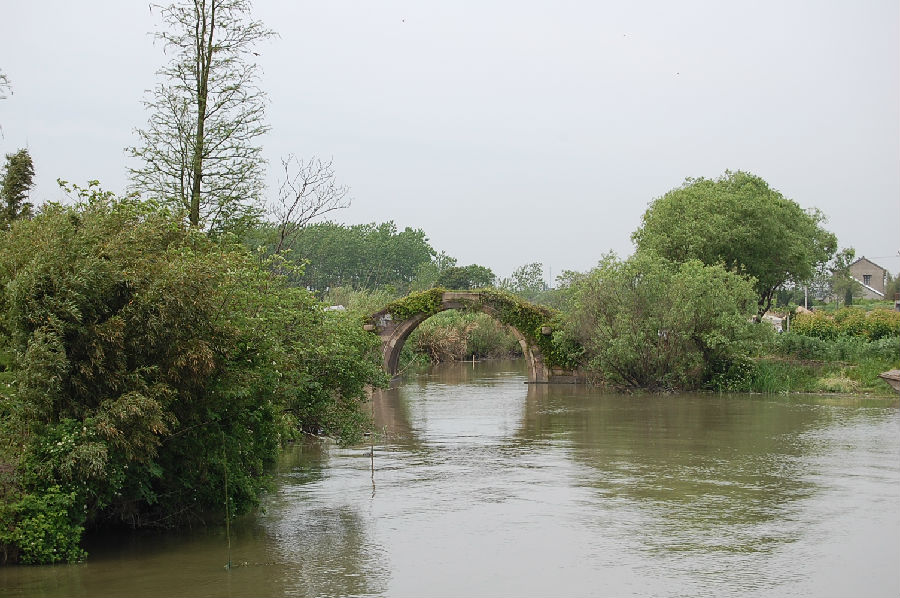

嘉兴市文物保护网 · 市级文物保护点 · 2020-11-09 · 原文

建国村步云桥位于嘉兴市南湖区大桥镇建国村徐家浜自然村与嘉善先锋村交界处。南北向跨章店桥港，为单孔石栏桥。桥始建年代不详，根据其形制推断为清时建。顶盘石刻有涡纹，桥额为“步云桥”，南北两侧各有台阶12级。桥全长15.91米，宽2.83米，高3.5米。步云桥形制美观，有一定的历史文物和艺术价值。2010年公布为市级文保点。